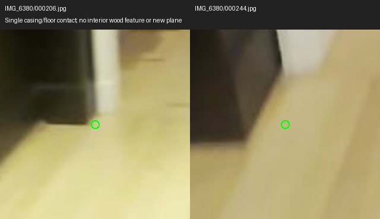
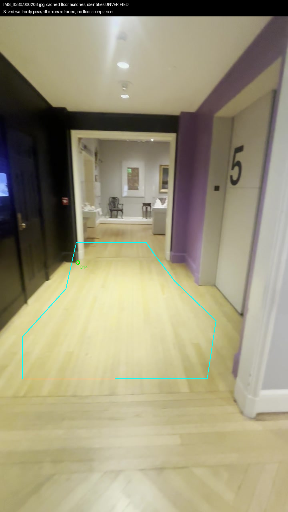
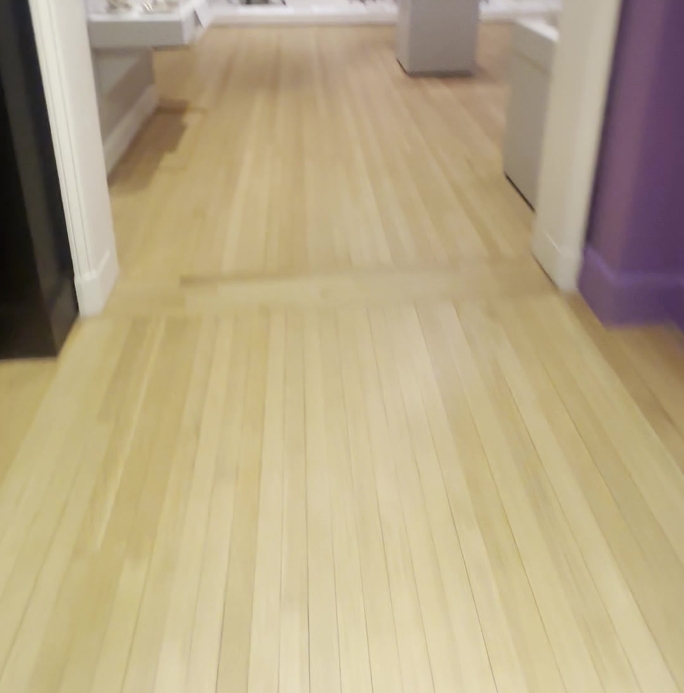
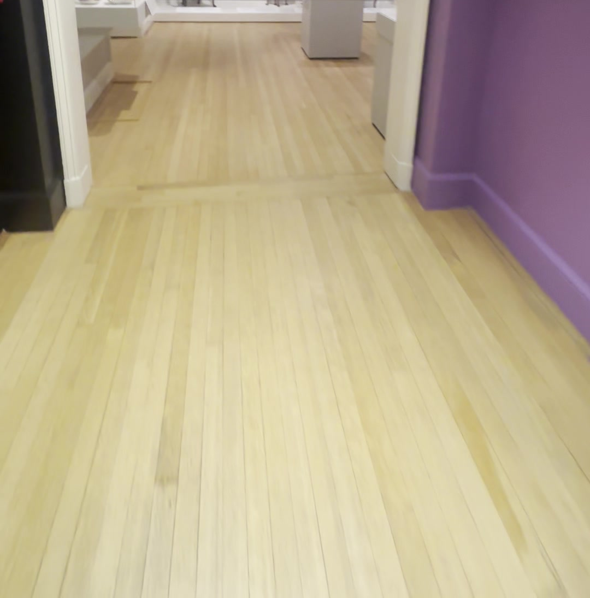
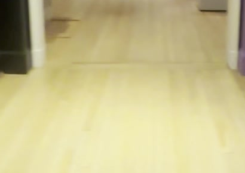
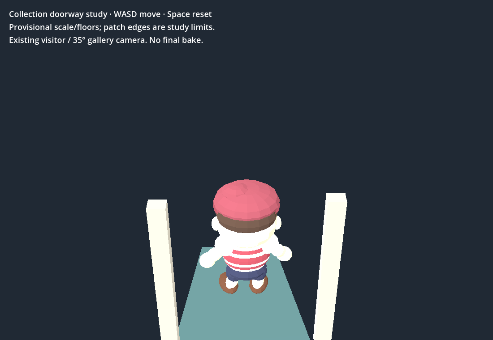
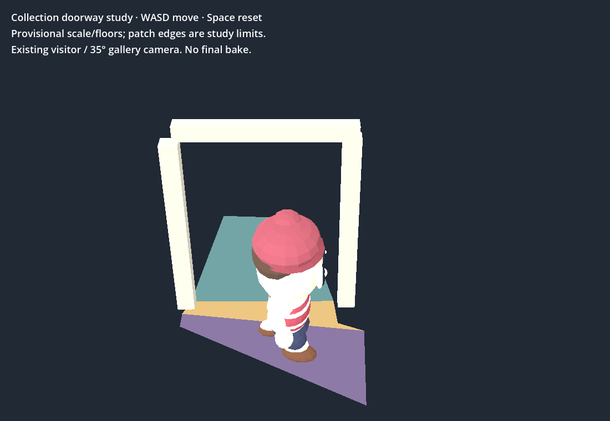
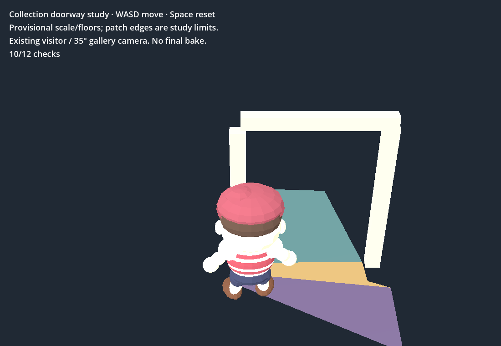

Prototype evidence; connected museum map remains incomplete. No new floor, scale or collisions accepted. Viewer unchanged.
Saved wall-only entry 206 pose: one cached wood-mask match is a casing contact at 2.11 px, zero interior wood matches against 244/505. Native 206 remains blurred. Four native reference frames prepared with full-stream GPU sampling; reserved 246/506 excluded from landmark choice/fitting.
Existing provisional doorway walk: 24 native and browser engine checks pass, plus real WASD forward/return. Shell retains four prior failures. First native capture interrupted by broken X connection; separate final capture passes. Tick $0; Muse recorded total $0.02.
Open the existing bounded doorway walk · Dated checkpoint and next action · Raw cached match diagnostic · Native floor review







